The Past, Present and Future.
Доминация и падение семьи Empire.
Думаю многим игрокам интересна судьба семьи Empire - самой популярной, сильной и интересной семьи на Green сервере. Семьи, которая смогла переиграть админскую семью Тренча (здесь и далее, все имена означают никнеймы игроков сервера). Дважды. Семью, чье общее состояние оценивается больше чем в 5 миллиардов виртов.
В этой статье вы узнаете о том, как она создавалась, о том как распалась и была удалена... о том как снова собралась, воевала с админами и держала топ-1 около 5 месяцев, но, к сожалению, отдала первое место читерам (Липам) и многие ее участники перешли на другой проект или вовсе ушли из сампа.
The Past, Present and Future - заголовок придуман лично мной (по аналогу группировки Evolution в WWE, которая существовала с 2003 по 2005 год), потому что в Импайре были старые игроки, которые застали еще расцвет адванса, были игроки, которые стояли на лидерках и бывшие администраторы и были новички, которые на адванс пришли относительно недавно.
История создания.
Началось все немного раньше, в январе 2021 года, когда мне надоело играть на аризоне и я решил в очередной раз вернутся на адванс. Мне еще в ноябре 2020 года понравилась обнова с Транспортными компаниями и было интересно катать фуру. В основном это было связано с тем, что я нафармил на лавине ресурсов на 50-70 миллионов, поднял в казино 200 и потом все проиграл (как всегда), к тому же тогда ввели фикс, что при полном сервере без каких-либо дополнений зайти нельзя (один раз писало, что сервер Full, а дальше Didn`t Respond, при полном сервере без лаунчера и дополнений зайти было невозможно), да, фиксы были на бластхаке, но asi файлы я не рискнул качать, а лаунчер аризоны я никогда не любил. Хорошо, что есть есть фастконнект от AIR и многие его используют, да и очередь на сервера не такая большая, ведь уже 17 серверов, а не 14.
Создание импайра планировалось сразу, когда всем игрокам адванса стало известно о обновлении.
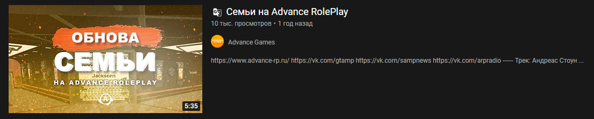Было это в начале февраля 2021 года, но прошло уже 13 месяцев...
Сама идея создания семьи состояла в том, чтобы принять к себе всех старичков, богатых игроков и просто известных личностей на Green сервере. Никто изначально не знал систему начисления семейных очков, но уже в первый день Empire были топ-1 семьей по количеству очков и участникам. Уже за день до обновления был примерный список игроков, которые согласны вступить в Empire, однако большая часть потом перешли в админскую семью ARP Green, с целью получить админку. Создатель ARP Green - Kevin Trench, главный администратор сервера.
Сама система выглядела так, что при создании семьи было 10 слотов для людей, далее можно улучшить до 50 (максимум), но это стоило семейных очков. Кто быстрее набирал эти очки, тот мог расширять слоты, принимать больше людей и фармить активнее.
Создал семью Homie Nope, а позже (после ее удаления) ее воссоздал Mario Rinaldi.
Первый ТОП-1.
Первые дни все просто узнавали системы, тестировали все мероприятия, чтобы понять количество очков, которое дается за участие в гонках/пабге/казаках-разбойниках.
Систему сделали криво (не удивлен, что этого бездарного разработчика выгнали новые владельцы даймонда и он перешел на адванс). Примерно к концу февраля топ семей выглядил вот так:
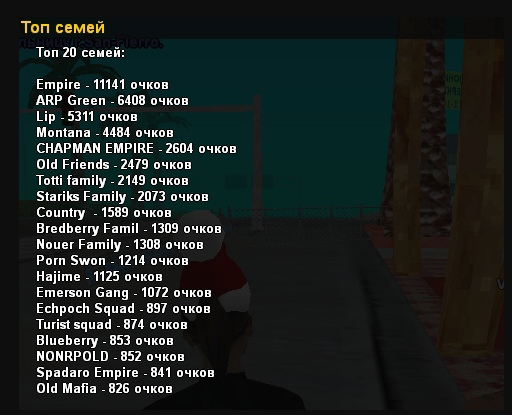О конкуренции или войне семей.
Если на других серверах не было конкуренции (я проверял на реде, блу и лайме), то на грине она была самая жаркая. Война шла между 4-мя семьями изначально, но потом некоторые сдали позиции. Это были семьи: Empire, ARP Green, Lip и Montana. Я никогда не любил такие войны фармил в сампе, особенно со своей последней лидерки байкеров на самп рп 02, где есть система /brating и война за бизнесы. Если кратко, то там каждую неделю клуб получает некоторые плюшки в виде виртов, склада, увеличение вместительности фургонов и т.д. Важен сам процесс соперничества, а не конечная цель в виде миллионов. Я никогда не любил проигрывать, однако в байкерах была жесткая конкуренция (подробнее в моей первой книге сампера) Я думал, что ничего хуже уже не будет, но я ошибался...
Началось все с Тренчей. Главный администратор сервера Green - Михаил Журжа (Kevin Trenсh) создал свою семью Trench (позже переименовали в ARP Green). Все бы ничего, если бы в семью вступали бы только действующие админы, но заявки туда писали действующие лидеры, которые хотели админку и фармили очки, многие даже помогали виртами Тренчу и раздавали премии за очки (по типу Макара Ворона). Семья имела огромное преимущество перед другими, была главным конкурентом Empire, однако ближе к лету она стала уже топ-3. Липы перегнали их, а потом и нас. Но об этом позже...
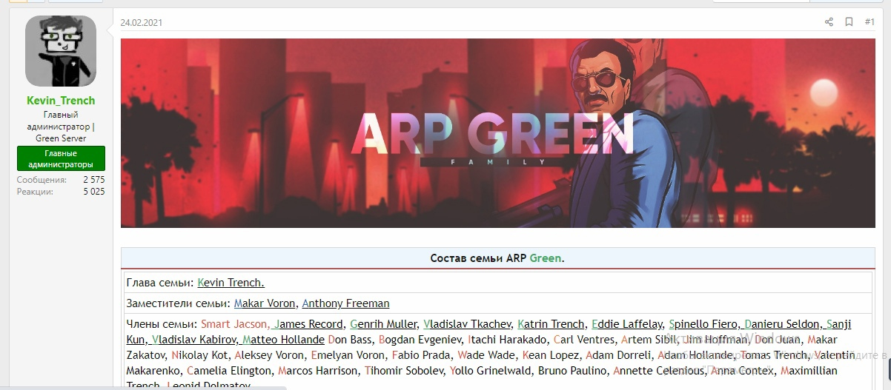Кроме ежедневных мероприятий семейные очки еще приносили /tasks (ежедневные задания), которые администраторы выполняли читами. Делали это многие в рестарт, после входа на сервер телепортировались на шахту сразу, потом на завод и т.д, в то время как обычный игрок тратить время на перемещение. Отсюда было преимущество и использование админки в личных целях. Все жалобы, которые на это писались, дальше Тренча не ушли. Многие админы просто фармили очки на Пабге и игнорили репорт.
Однако Тренчам не получалось перегнать Импайр. Но 28 февраля случилось нечто интересное...
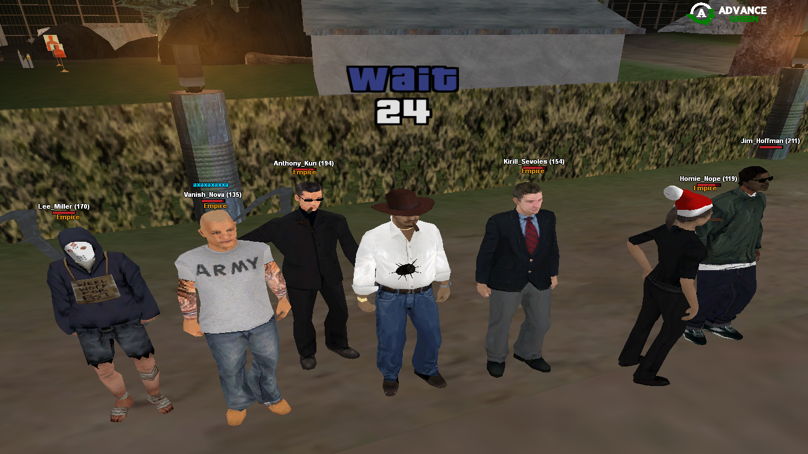 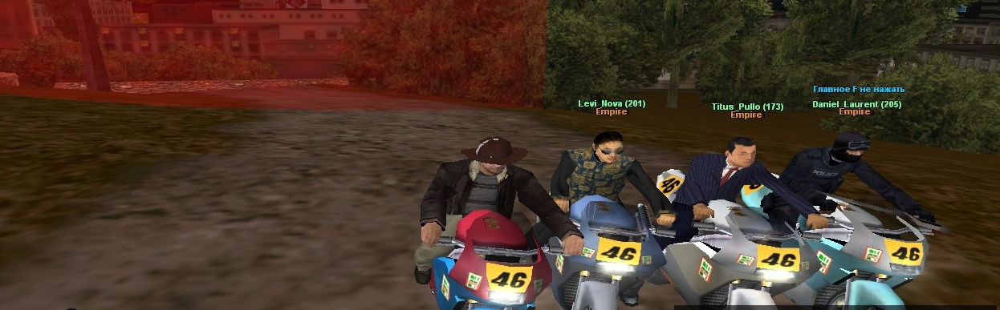 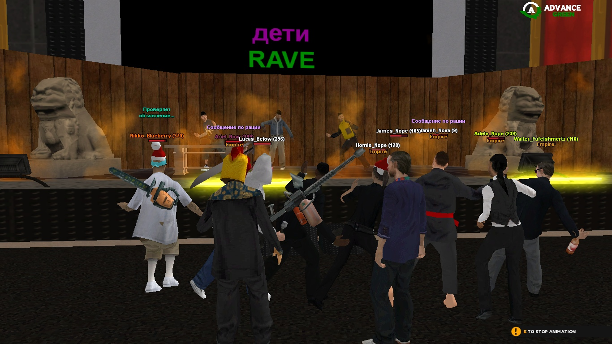Удаление семьи Empire.
28 февраля был обычный день... скоро весна, Тренчи отстали в очках, Липы еще дальше. Но произошла некая ситуация. Я понял ее таким образом: семью нужно было содержать материально, ведь у Импайра была система выплат за семейные очки в сутки и многие игроки зарабатывали неплохие деньги, уже не вспомню сколько там было, но по сравнению с заработком в ТК - это были копейки, но для новичков была приличная сумма. Большая часть игроков отказались от денег, но все равно в день уходила крупная сумма. Хоми Ноуп хотел собрать 5 миллионов на конкурс, пытался собрать денег среди фамы, но почти никто не дал ни копейки, хотя в семье было около 10 человек, у которых виртов или имущества на сотни миллионов. Хоми Ноуп пригорел, кикнул всех из семьи, а потом и вовсе удалил ее системно, потеряв кучу денег с банка семьи, за квартиру и транспорт. Понять можно, так как он один производил все выплаты и ушел в огромный минус, а виноват здесь только разработчик кривой системы, где топ-1 семья получает только отображение названия семьи над своим ником. Если на арз игроки могут зарабатывать в фамах (тот же зловещий дворец, монеты с территорий, квесты на фам. талоны и т.д), то здесь люди даже уходили в огромный минус за регистрацию на мпшки.
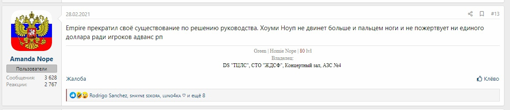Охарактеризовать можно было многими словами, но это видео тогда подошло больше всех:
Больше всех радовались Тренчи и его окружение. Они переманивали людей к себе в семью и многие перешли к ним, даже мне на пабге кинули инвайт, другого выхода не было и я нажал Y.
А уже на следующий день меня забанили за багоюз, когда куча людей умерли на казаках и у них оказалось в руках по 5000 AK47. Шкафы у семей тогда были пустые, так как покупка шкафа стоила миллион и 1000 семейных очков и их покупали не сразу. 3 человека положили в семью Тренча оружие, забанили только меня. После жалобы разбанили.
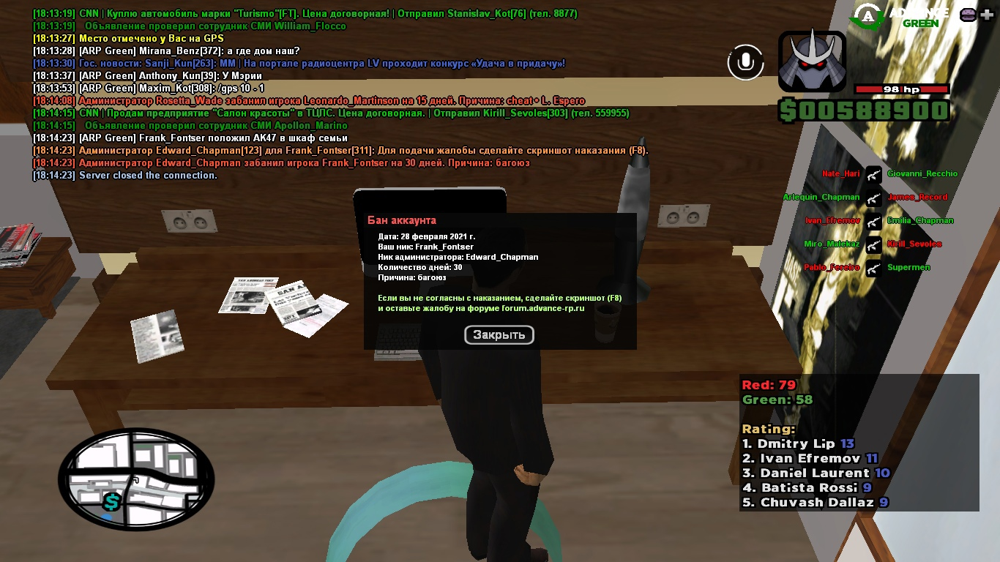Воссоздание семьи.
В воссоздание семьи и дальнейшую доминацию никто не верил. Я просто катал в Транспортной компании, параллельно сливая вирты в калигуле, в дурака и в кости. У меня уже получилось поиграть месяц без бана, так как что-то держало на сервере. Я чувствовал, что нужен и могу приносить пользу для семьи. Я часто ходил на пабги, побеждал на казаках и администрация грин сервера так и не поняла, что я эти 4 месяца играл с аимботом по скину. Хватало ума не палится и не пережимать как Джим Хоффман. Иногда получалось побеждать на пабге, так как было стандартное ВХ и скрипт, который рендерит объекты на пабге, иногда винил пабги на 300к без единого килла, просто катаясь по карте и собирая аптечки.
Семью решил воссоздать Марио Риналди. Он был единственным, у кого было много денег (за счет ТК и монополии мастерских) и он мог выплачивать людям миллионы в день за семейные очки. В сумме у него ушло больше 70 миллионов.
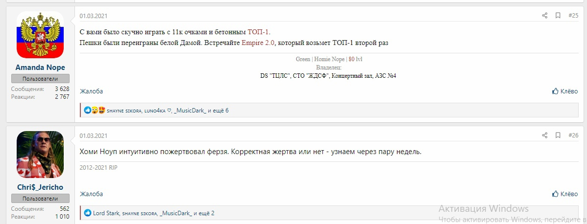В первый день дела шли плохо, приходилось как-то собирать старый состав назад, буквально каждому флудить и уговариваться вернутся. Через 2-3 дня состав был укомплектован, была создана конфа ВК, которая разрывалась от вечного флуда. Оставалось одно. Взять топ-1 и выбить оттуда Тренчей.
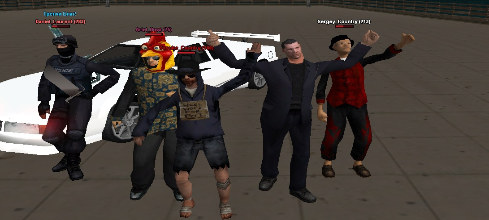За 9 дней получилось приблизится к Тренчам.
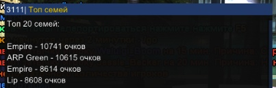А спустя еще 3 дня (Тренчи начали активнее фармить) у нас получилось взять топ-1.
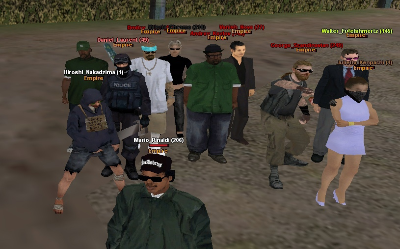 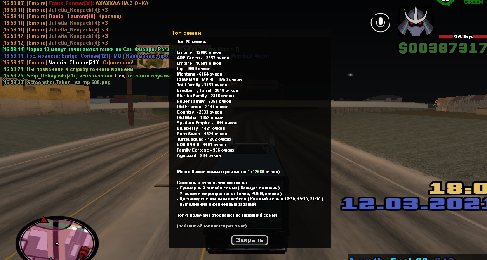За это время из импайра не улетело ни одного читера, не спорю, что многие тут играли с СХ на гонках, юзали читы на кейсах, аимы на казаках, но не палились так открыто, как это делают Липы сейчас. Забанено всего было из импайра пару человек и то случайно спалались с клео-нитро и т.д.
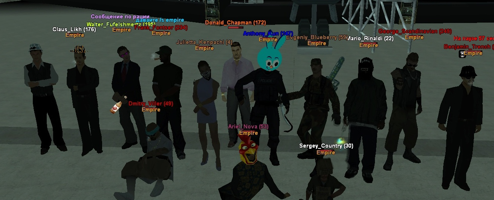 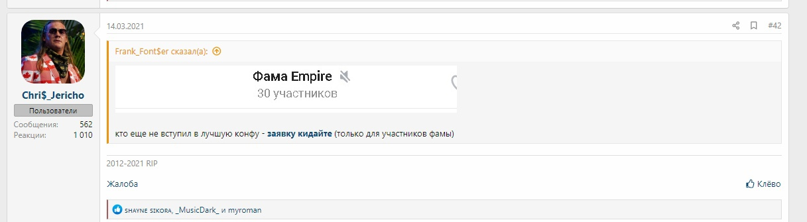 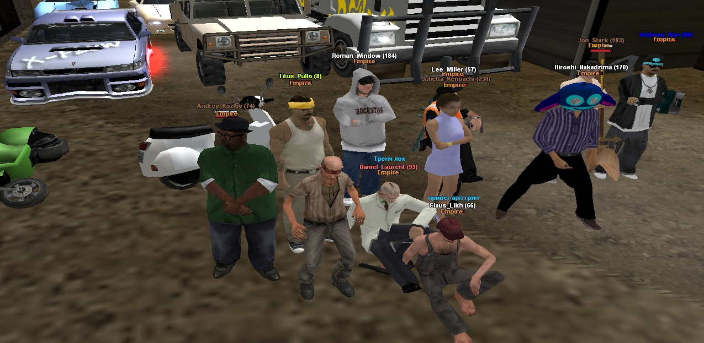Дальше у многих пропала какая-либо мотивация, актив упал, очки никто не фармил. Но даже при таком раскладе мы в сутки получали больше очков, чем Транчи, Липы и Монтаны. Монтаны сильно отстали, но почти все кейсы забирали себе. Делали это не совсем честно, многие улетали за сало, а некоторые до сих пор играют с аимом по колесам.
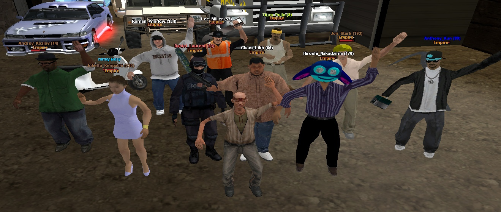Время было золотое, я получил должность заместителя в семье, замку в ТК McRally и играть стало еще интереснее. Это был мой рекорд игры без банов после калигулы, но я все равно спускал весь свой заработок туда.
В день в семью хотело по 3-4 человека как минимум, но мест не было (лимит 50 слотов) и даже неактивных не было...
Думаю, многим будет интересно узнать про конфликты, которые происходили в семье Empire, ведь в этой жизни нет ничего идеального.
Первый конфликт еще произошел в начале марта, когда мы искали людей, чтобы добить до 50/50 слотов, я предложил кандидатуру Луни Шершень, однако из-за ее характера у нее не получилось остаться в семье. Были регулярные конфликты в конфе с клоунами по типу Ваниша Новы (Ваня Краiiло) и т.д, в итоге ее просто кикнул Риналди. От Луны много пользы было, так как она фармила очки.
Дальше был конфликт с лидером грув Adam Hollande (человеком, который задонатил на адванс в 2021 году более 100 тысяч рублей). Если кратко, то был человек Sora Miyazaki, обычный игрок, который бегал в семье, общался со всеми. Потом открыли заявки на лидерку Грув (РП банда), многие из импайра просто об этом не знали и только он написал заявку и его одобрили и поставили (остальные заявки там были от школьников, которые хотели каптится и его заявка была самая нормальная). Я попросился на 9-й ранг, так как хотел потестить систему контейнеров. Позже, раскладывая конфетки по гетто, я нарвался на неадекватного школьника из Ацтеков, который залил на меня 2 жалобы и мне должны были дать варн якобы за ДМ. Хотя ДМа никакого не было, была просто проф. непригодность Кевина Джонса, мне потом выдали КПЗ за 2 эти жалобы и я поработал на шахте немного.
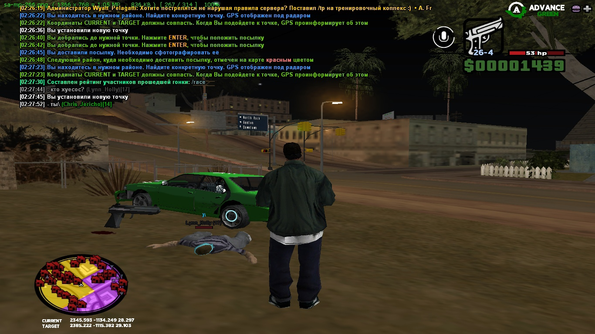С 9 ранга я ушел по СЖ, так как уже тогда пропадал интерес играть на адвансе, а на 9-м ранге приходилось ездить на конты, красить граффити, играть псевдо-РП, которое никому не нужно в 2021 году. Я попросил лидера понизить на 5-й. Далее произошла интересная ситуация, где лидер просто уволил из грува весь состав импайра за РП сон, далее я его выгнал из семьи, что вылелось в 10к+ сообщений срача в конфе, в итоге он перешел к Тренчам. Мы пытались помешать ему нормально стоять, вступив в Рифу, за день закрасили все граффити (чтобы грувы зп не получали), но гетто на адвансе настолько плохое, что лидера рифы сняли на след. день и был расформ.
Импайр продолжал возглавлять топ семей, было уже начало апреля.
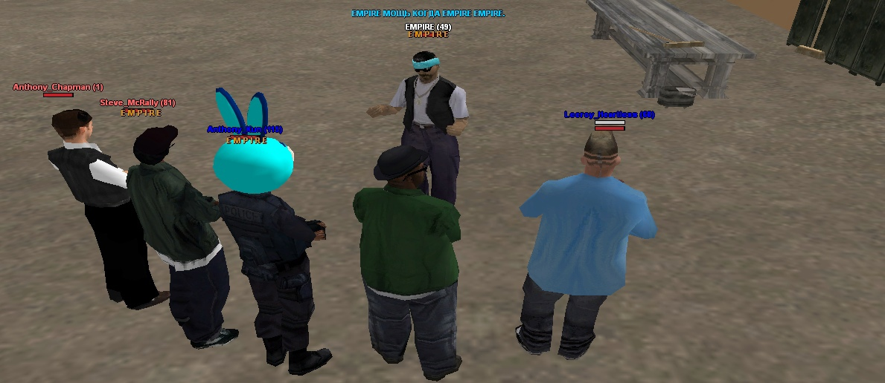 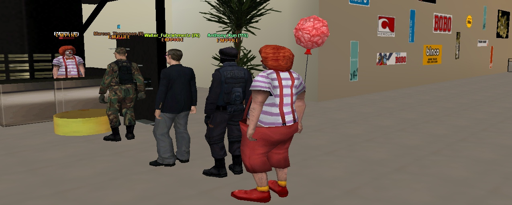За это время много людей ушли из сампа, а импайр собрались переходить на аризонку гильберт, который открылся 9-го мая.
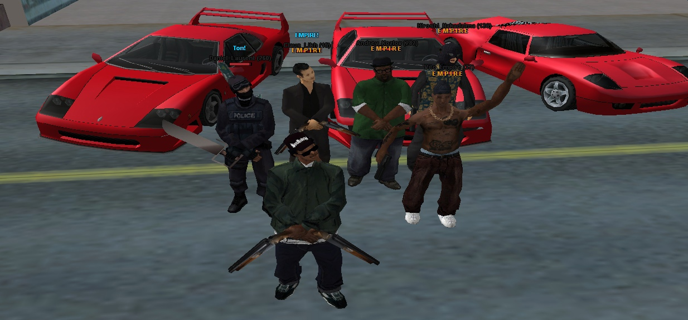Потерял я интерес к адвансу где-то в середине апреля, позже забанившись за дамагер. Я разносил с дамагера со снапы людей, которые не довозили огрызки заказов и меня как-то спалили. До этого я разыграл все свои аксы.
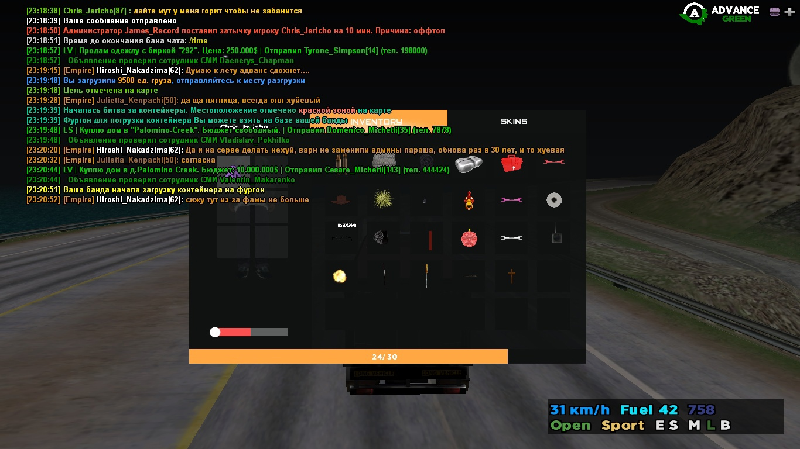В конце апреля семья уже имела все улучшения.
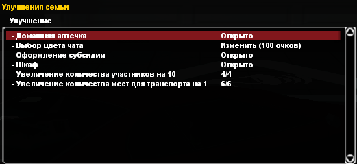А вот так выглядит топ на начало июля.
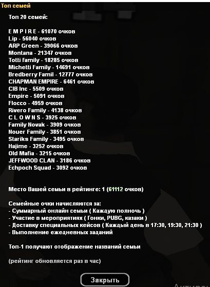До незбежной утраты топ-1 оставалось пару недель, но сейчас не про это...
Многие члены импайра перешли на аризонку Гильберт, который открылся 9 мая. У нас была своя отдельная конфа из 10-ти человек, я поставил своеобразный "рекорд" - 21 день без бара и казино, но прервался он следующим способом.
Риналди в очередной раз напился (а за эти месяца это было регулярно: напивался и всякий бред писал в конфу), предложил мне 100кк на Винслоу (у меня там был акк), чтобы я качал депозит, я согласился и через час проиграл все в казино. Далее пошел на гильберт и была такая же ситуация. Давно думал уйти из сампа навсегда (до сих пор не получается, как видите) и решил забанить все аккаунты. Я закрыл бизнесы Риналди и забанился за оск. родных на гильберте и винслоу, удалив свой ВК примерно на недельку (на больше не хватило), глупо после такого было возвращатся, но я еще вступил потом в импайр и фармил...
Свою игру на грине я закончил в середине июля, после участия в битве за кейс.
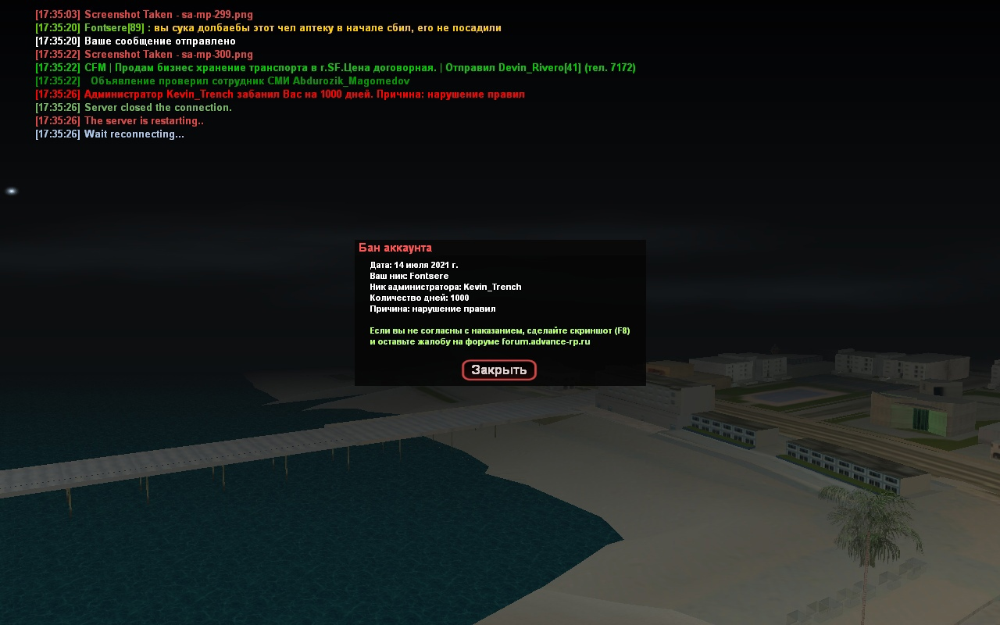Забанил Тренч за массовое нарушение правил сервера, хотя я до сих пор считаю, что перебор тут и можно было бы оставить аккаунт с 9292 абилити в ТК и 37 уровнем. Мне запретили играть на грине, сделано это было специально, чтобы я не мешал семье Лип брать топ-й, ведь я в день делал по 150-200 очков только с пабга.
Многие еще не знают, что у импайр были и есть специальные скрипты, по типу fastpubg, свой дешифровщик чата и т.д. Вальтеру спасибо, человеку, который для фамы сделал больше, чем человек, который писал эту систему.
Думаю, что можно было легко не дать читерам из Липов топ-1, если бы Риналди не жалел в конце денег на конкурсы и многие бы подняли немного актив.
Так и закончилась эра самой популярной, сильной и интересной семьи на Green сервере — Empire.
Автор текста: бывший участник и заместитель главы семьи Empire - Frank Fontser.
Ссылка на оригинал: https://forum.advance-rp.ru/threads/...
Примечание (от 22/03/2022): были внесены небольшие правки в текст для соответствия датам.